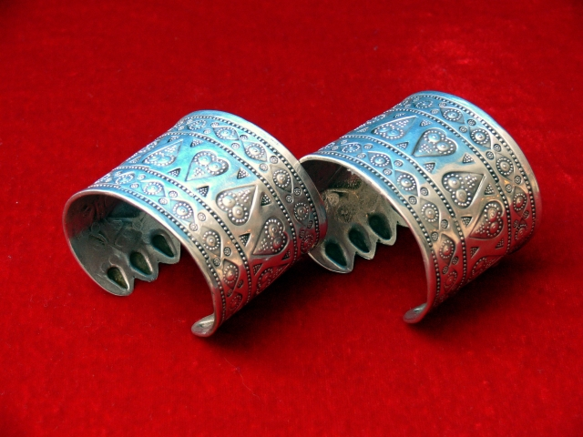
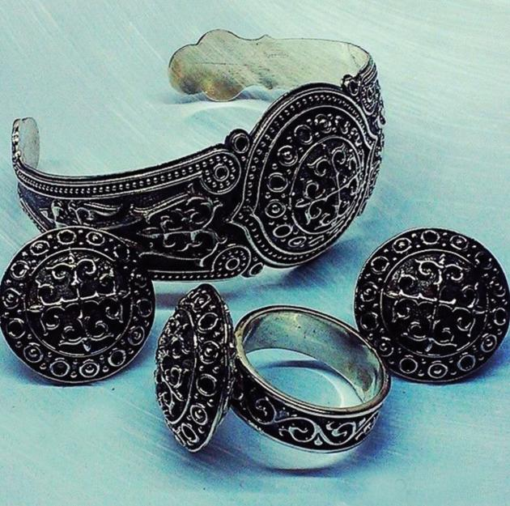

Ұлттық зергерлік бұйымдар
Қазақ халқының ерте заманнан бастау алған зергерлік өнері халық өмірімен, тарихымен, шаруашылығымен тығыз байланыста дамып келеді. Адам баласы ежелден әшекей бұйымдарды киімнің ажырамас бөлігі ретінде санаған.

Кез келген қыз-келіншектің зергерлік бұйымдары, асыл тастары, онда бейнеленген ою-өрнек әсем келбетіне әдемі үн қосып, сымбатын одан әрі ажарландырып, тартымдылығын арттыра түседі. Олай болса, сұлулықтың нышаны болған ұлттық әшекейлерімізге қысқаша шолу жасап өтейік. Алқа – омырауға тағатын, көбіне күмістен жасалатын көркемдік бұйым. Білезік – күмістен, алтыннан соғылады. Жасалуына қарай алтын білезік, күміс білезік, құйма білезік, сағат білезік, топсалы білезік, бұрама білезік, қос білезік т.б. түрлері бар. Жүзік – қымбат тастардан көз орнатылған жалпақ сақина түрі. Оның еркектер де, әйелдер де салатын түрлері болады. Отау жүзік, құдағи жүзік, қарала жүзік, ақық жүзік деген атауы бар. Қапсырма – әйел камзолына, шапан сияқты киімдеріне тағылатын түйме қызметін атқаратын жалпақ күміс бұйым. Кейде әдемілік үшін бірінің астына бірі, бірнешеуі қатар тігілетін болған. Кейбір жерлерде қаптырманы ілгек деп те атайды.

Сырға – құлаққа тағатын сәнді асыл бұйым. Оның сапасына, құрамына сай көптеген түрі болады: ай сырға, тас көзді сырға, күмбез сырға, салпыншақ сырға, сабақты сырға, шашақты сырға т.б. Тұмар – сәндік үшін немесе Құран сүрелері жазылған қағаз салынатын омырауға тағатын жұмыр түтікше тәрізді жасалған салпыншақты бұйым. Тұмарша, бойтұмар деген түрлері бар. Зергерлік бұйымдарының тағу ерекшеліктері Қазақ зергерлері (зер-зар – парсы тілінде алтын дегенді білдіреді) әрқайсысы жеке-дара жұмыс істеп, өз ұсталығын атадан балаға мұра етіп қалдырып отырды. Әйелдердің әшекей бұйымдары да, киімге тағатын түрлі қосымшалары да, тазалыққа қажетті бұйымдар да, ас жабдықтары, киіз үйдің ағаш қаңқасының, жиһаздардың, ағаштан және теріден жасалған ыдыстардың, саз аспаптарының, қару-жарақтардың, ат әбзелдерінің бекітпелері де осы зергерлердің қолынан шықты. Зергерлік бұйымдардың стилистикасы да географиялық жағдайға, ең бастысы, қазақтардың тұрмысының көшпелі салтына орай соншалықты сан алуан болды. Азияның далалық аймағының алып кеңістігіндегі көшпенділердің тұрақты түрде көшіп қонған атмосферасында, түрлі халықтармен араласуында, олармен мәдени құндылықтарды алмасу кезінде қазақтардың зергерлік өнері дамып, байи түсті.
Қазақ зергерлерінің сүйікті материалы күміс болды. Зергерлік бұйымдары жөнінде сөз бола қалса, бәрінен бұрын, олар қаншалықты сәнді болса, соншалықты жаман нәрселерден қорғау қасиетіне ие болып, сондай мәніне қарай олардың қалып мен ою-өрнек алғанын, жасалынатын материалының да түрліше болғанын ескерген жөн. Күмістің жылтылы мен түсі айға, айдың жарығына баланды. Олардың ойынша, «Боз ғаламшар» мен күміс бір-бірімен тығыз байланысты; металды түнгі жарықтың бір бөлігі ретінде қабылдап, оған түрліше құдіретті (магиялық) қасиет берді.
Қыз-келіншектердің өздері қандай көрікті болса, үстіне киген әсем киімі, тағынған сәнді бұйымдары оларды тіпті құлпыртып жібермейді ме?! Қазақ халқының да зергер, ұсталары ерте заманнан-ақ түсті металдардан сан алуан бағалы бұйымдар жасап, нәзік жандылардың көркіне көрік қосқаны, бізге жақсы мәлім. Этнограф ғалымдардың пайымдауынша, солардың ішінде әйел әшекейлері – қазақ қолөнерінің асыл мұрасы.
Қазақ халқының ерте заманнан бастау алған зергерлік өнері халық өмірімен, тарихымен, шаруашылығымен тығыз байланыста дамып келеді. Адам баласы ежелден әшекей бұйымдарды киімнің ажырамас бөлігі ретінде санаған. Кез келген қыз-келіншектің зергерлік бұйымдары, асыл тастары, оларға бейнеленген ою-өрнектері олардың әсем келбетіне әдемі үн қосып, сымбатын одан әрі ажарландырып, тартымдылығын арттыра түседі. Олай болса, сұлулықтың нышаны болған ұлттық әшекейлерімізге қысқаша шолу жасап өтейік.
Әшекейлердің түрлері
1. Киім-кешектегі әшекейлер: бас киімге тағы-латын сәндік бұйымдар, үс-
Тіндегі киім-кешекке тағылатын әшекейлер, белдіктер.
2. Денедегі әшекейлер: шашқа тағылатын, мойынға, басқа, кеудеге, иыққа, қолға, аяққа тағылатын зергерлік заттар.
3. Тұрмыстағы әшекей-лер: денсаулыққа пайдалы әшекейлер, сәндік әшекейлер, зат салатын сәндік бұйымдар.
Әшекейдің мән-маңызы
Зергерлік әшекей бұйымдар байлық пен сәндік белгісі ғана емес, киім-кешек мәдениетінің ажырамас атрибуты да. Олар бірегей кешенді аксессуарларды құрап, киім-кешектің ғұрыптық, функциялық ерекшеліктерін, қолда-ныстық сипатын арттыра түседі.
Қымбат әшекей бұйымдарды (сырға, жүзік, сақина, білезік, алқа, тұмар, диадемалар мен шолпылар) қалай тағу қажет, оның өзіндік қатаң қағидасы бар. Соның бастыларының бірін талдап түсіндірсек, қазақ қыздарының басына үкілі сәукеле киіп, құлағына алтын сырға тағуы, саусағына сақина, білегіне білезік киюі, беліне белдік буынып, шашына шолпы қадауы олардың парасатының биіктігін, эстетикалық талғамының жоғарылығын танытады.
Көптеген әшекей бұйымдар ұзатылатын қыздың сән- салтанатты жасауы болыпта саналады. Кейбір әшекейлер жас талғаса, кейбір әшекейлерді қыз-келіншектердің бәрі бірдей таға береді.
Әйел әшекейлерінің жасалуы
Әдемі әйел әшекейлерін жасағанында қазақ шеберлерінің пайдаланылған негізгі түсті металдары: күміс, алтын, қола, жез. Бұрындары қазақ даласындағы сәндік бұйымдар Ресейдің, Қытайдың күміс, алтын ақшалары-нан жасалынды. Тіпті, шетелдермен сауда дамыған тұста қытайдың қой тұяқ, тай тұяқ жамбылары мен поляк күмісі де қазақ шеберлерінің қолына түсіп, содан сәндік көптеген заттар жасап шығарылды. Ол кезде дәулетті адамдар алтын мен асыл тастарды өздері тауып беріп тапсырыс айтатын.
Қазақ шеберлерінің күміс бұйымдарды жасағанда кеңінен қолданған зергерлік тәсілдері: отқа қыздырып соғу, балқытылған металды қалыпқа құю, кептеу, тыныкелеу, қаралау, темір бетіне күміс шабу, сымкәптеу, сіркелеу, жұқа күміс әшекейлердің астынан бедерлі қадаубастармен батыра ұрып бедерлеу, бізбен безеу, күмістеу, алтындау,дәнекерлеу, оймалау, асыл тастардан көздер орнату.
Алқа – бірнеше бөлік асыл тастардан, түрлі-түсті шыны көздер орнатылған бірнеше алақаннан тұратын, топсалы шынжыр арқылы тағылатын мойын әшекейі. Алқаны жасөспірім және бойжеткен қыздар, жас келіншектер таққан. Алғашында алқа дөңгелек алқа - бірнеше бөлік асыл тастардан, түрлі-түсті шыны көздер орнатылған бірнеше алақаннан тұратын, топсалы шынжыр арқылы тағылатын мойын әшекейі. Алқаны жасөспірім және бойжеткен қыздар, жас келіншектер таққан. Алғашында алқа дөңгелек пошымда, әрі әшекей ретіндс тағылғанымен, бертін келе оның түр-сипаты өзгеріп, тұмарша түріне, дәлірек айтсақ, үзбелі салпыншақты пішінге ауысқан. Алқа моншақтан тізген асыл тастардан, алтын мсн күмістен соғылып, бетінс асыл тас қондырып, ою-орнеістеп, салпыншақты стіп жасалады. Алқа бірнешс бөліктен тұрады: алақан - бір-бірімсн топса арқылы байланысатын жалпақ күміс немесе күмістелген қаңылтыр (оны кей жерде тақта деп те атайды); алаңанбау - мойынға байлайтын жібек жіп немесе күміс шынжыр; аяқ - алқаның шынжырлары, салпыншағы; қас - алқа көзіндегі тас; қоза - шар сияқты ұсақ домалақ әшекей; тойнақ бекітілген топса тәрізді тетігі. Алқа түрлері өте көп: алқатас - жіпке тізген моншақты асыл тас. Алтын алқа- алтын жалатылған өңір-жиек; алтын жамбалы алқа - кесек алтыны бар я сом алтыннан соққан, шоқ орнатқан алқа; бойтұмар алқа - әшекейленген тұмардыц өзі; дан алқа - ертеде қызметі, лаузымы жоғары адамдардың мойнына тағатын белгісі. Сондай-ақ, салпыншағы мол, бірнеше шашақты сәнді зер шашақты алқа; көлемі шағын көкірекше алқа; шар тәрізді сылдырмақтармен әшекейленген қозалы алқа; екі қатар етіп алтын-күмістен соққан қос алқа; төрт бұрышты екі алақаннан (пластинкадан) тұратын қос тақта алқалар кездеседі. ҚР MOM қорында сақтаулы күміс алқаның шынжырының ұзындығы 22 см, салпыншақтарының ұзындығы 17 см. Мойынға ілетін шынжырдан төмен қарай аяқ деп аталатын тағы да қысқа шынжырлар бекітілген. Олардың ұштарына сөлкебай деп атаған Патшалық Ресейдің күміс ақшалары мен бес дана ақық тағылған. Бес дана ақықты металмен қырсаулап, қоза етіп жасаған және үшкіл пішінге келтірілген сіркелеу техникасымен әшекейленген. Жиектерін айналдыра сым жүргізіліп, олардың да іші сіркеленген. Қырсауланған қоза тәрізді ақықтар сөлкебай салпыншақтардың арасына тағылған. Оның біреуі мойынға тағатын шынжырдың ұшы тойнақпен жалғастырылып, шынжырды тұйықтап бекітуге арналған топса салынған. Бұларға қосымша ұзынша собық тәрізді қоза және екі дөңгелек гүл пішінінде перузадан коз салынған шытыра орнатылған.
Құдағи жүзік - үлкен сый-құрметтің белгісі. Ол басқа жүзіктерге ұқсамайды. Жүзік екі саусаққа қатар киілетін екі шеңберден тұрады. Құдағи жүзікті қалыңдықтың шешесі құдағайына өзінің қызына мейіріммен қарауы үшін және құдандалы екі рудың бір-біріне ынтымағы үшін сыйға тартатын. Құдағи жүзік – адамдар арасындағы сыйластықтың, адамдарға көрсетілген ілтипаттың, құрметтің белгісі. Оның үстіне ел ішінде көптеген егде адамдар қолында құдағи жүзігі бар егде қайын енелерді көріп, оның үй-ішіне, жақын-жұрағатына сыйлы, қадірлі кісі екенін бірден білетін болған. Жүзіктің ақықтас, астына қызыл бояу жаққан, әйнек салған көздері де болады (Қызыл – оттың,
Құстұмсық жүзік – бақыттың, тәуелсіздіктің, еркіндіктің белгісі. Бұл жүзікті бойжеткендер тақты. Қыз жат жұртқа кетіп бара жатқанда, анасы қыздың қолынан жүзікті шешіп алып, қыз жасауымен бірге орамалға түйіп, сандығына салып жіберетін болған. Бұл жүзік қыз жағдайының хабаршысы ретінде кейін қайтып келуі керек. Сондықтан қыздың төркін жағынан оның қал-жағдайын білуге барған інілері осы құстұмсық жүзікті қайтып әкелсе, қыздың анасы қатты қуанып, құдағайым қызыма өз қызындай қарайды екен деп, ауыл арасына кішігірім той жасаған.
Білезік – күмістен, алтыннан соғылатын, білекке салатын әйел бұйымы. Жасалуына қарай алтын білезік, күміс білезік, құйма білезік, сағат білезік, топсалы білезік, бұрама білезік, қос білезік т.б. түрлері бар.
Бес білезік – алтын, күмістен, асыл тастардан көз орнатылған күміс шынжыр арқылы бес сақина бекітілген аса қымбат білезік.
Балдақ – алтыннан, күмістен соғылған жұмыр сақина.
Жүзік – қымбат тастардан көз орнатылған жалпақ сақина түрі. Оның еркектер де, әйелдер де салатын түрлері болады. Отау жүзік, құдағи жүзік, қарала жүзік, ақық жүзік деген атаулары бар.
Жеңілгек – жейде жеңіне тағылатын бұйым. Теңге жеңілгек, күміс жеңілгек, меруерт жеңілгек деген түрлері болған.
Күміс отаға – күміске орнатылған бармақтай асыл тас. Бас киімге, батырлар дулығасына қадалған.
Кемер белбеу - негізі былғарыдан тігіліп, алтын, күміс әшекейлермен шектелген аса қымбат белбеу.
Қын – кемер белбеумен бірге тұратын пышақ салынатын әшекейлі, былғары бұйым.
Қапсырма – әйел камзолына, шапан сияқты киімдеріне тағылатын түйме қызметін атқаратын жалпақ күміс бұйым. Кейде әдемілік үшін бірінің астына бірі, бірнешеуі қатар тігілетін болған. Кейбір жерлерде қаптырма, ілгек деп те атайды.
Қолтықша – иыққа іліп жүретін тіктөртбұрышты тұмар-сөмке. Күнделікті ұсақ-түйек заттар мен тіл-көз тиюден сақтайтын қасиеті бар нәрселер салынады.
Маңдайша – сәукеле т.б. киім маңдайына тағатын көз орнатылған күміс тағым.
Оқшантай – ішіне шағын зат салынатын, кемер белбеуге өткізілген әшекейлі былғары қалта.
Өңірше - салпыншақтар тағып, үзбелеп жалғаған омырауға сән беретін, түрлі-түсті тастардан көз орнатылған әсемдік тағым тізбесі. Ерлердің жейдесі мен әйел көйлегінің омырауы әдемілікпен қатар, тіл-көзден сақтану мақсатында өрнекпен безендірілген.
Сырға – құлаққа тағатын сәнді асыл бұйым. Қыздардың әсем келбетінің қалыптасуына әсер етеді. Оның сапасына, құрамына сай көптеген түрлері болады: ай сырға, тас көзді сырға, күмбез сырға, салпыншақ сырға, сабақты сырға, шашақты сырға т.б.
Сәукеленің сырғасы – күмістен жасалған, көп қатарлы сырға пішіндес арнайы салпыншақ.
Тамақша – қазақ қызының мойынға тағатын әшекейінің бірі. Барқыт сияқты матадан сырып тігіледі, бетіне моншақ, меруерт, күміс тиындар тізіліп, төмен жағы маржан моншақтармен көмкеріледі.
Талмоншақ – бірнеше қатар тізілетін моншақтар.
Шекелік – сәукеле, тақия, басқа да баскиімге тағылатын тағым. Бірнеше бөліктен тұрады әрі оларға тағылатын әшекейлер үзбелі болып келеді. Қозалы шекелік, шошақ шекелік, ширатпа шекелік деген түрлері бар.
Шаштеңге – қыздардың өрілген шаш ұшына тағылатын жібек бау өткізілген күміс сөлкебай.
Тұмар – сәндік үшін немесе Құран сүрелері жазылған қағаз салынатын омырауға тағатын жұмыр түтікше тәрізді жасалған салпыншақты бұйым. Тұмарша, бойтұмар деген түрлері бар.
Шолпы – қыздардың бұрымға тағатын әшекейі. Шолпыны екі үзбелі етіп, күмістен соғады. Қақталған күмістен үш бұрышты немесе сопақша пішінді етіп жасалады да, ортасына асыл тас орнатылады. Төменгі үлкен тұмаршасының етегіне шынжырлап немесе үзбелеп соғып, сөлкебай тіркелген бірнеше салпыншақ тағылады. Ол баулары арқылы бұрымға қоса өріледі. Дәстүрлі қазақ қоғамында Шолпының – көзді Шолпы (асыл тас қондырылған), қозалы Шолпы, қоңыраулы Шолпы, шынжырлы Шолпы, қос үзбелі Шолпы, маржанды Шолпы, меруертті Шолпы, ақықты Шолпы, т.с.с. түрлері мен атаулары кездеседі. Шолпыны о баста әйелдер қара ниетті тылсым күштерден қорғану үшін тағып жүрген. Халық адамның жарты жаны шашта болады деп, оны қорғау мақсатында Шолпы, шашбау таққан. Кейде олардың салмағы 3 кг-ға жеткен. Шолпы жас қыздардың жүрісі мен бойын тік ұстау мәнерін қалыптастырған. Шашбау – қыздар шашымен қоса өрілетін моншақты, зерлі, күміс шынжырлы әсемдік тағым. Ұзындығымен ерекшеленеді. Кейде қара баудан жасалып, шашты ұзын және қалың етіп көрсету үшін қолданылады.
Шашқап – шашты, бұрымды шаң-тозаңнан, күн көзінен қорғау үшін арнайы тігілетін ұлттық сәндік бұйым. Ол мақпал, шұға, барқыт, мауыты сияқты көк, қызыл, қара түсті маталардан бұрымның жуандығы мен ұзындығына қарай пішіліп, тігіледі. Жоғарғы және төменгі жағынан ою-өрнекпен безендіріліп, зер, оқа, моншақтармен сәнделеді. Шашқапты кейде маржан, меруерт, күміс шеттіктер тағып та әшекейлейді. Ең ежелгі Шашқаптар сақ, үйсін дәуіріндегі обалардан (Алтайдағы Укок үстірті, т.б.) табылған.
Ол-қыз,келіншектердің шашына сәндік бұйым ретінде тағылады. Шашбау қыздардың шашының әр-ажарын ашады. Оны өрілген бұрымның ұшын бекіту үшін де тағатыны мәлім. Түркі халықтары алтын,күміс тиындар, кейде маржан қадалған, ызылған бауы бар шашбауды ежелден пайдаланып келеді. Шашбаудың жасалу, әшекейлену әдістері әртүрлі. Соған орай олар мынадай топтарға бөлінеді: үзбелі шашбау және шашақты шашбау. Қазақтарда шашбаудың сөлкебай шашбау, теңге шашбау, шаштеңге, үкі аяқты шашбау, шаш –түлек (лентадан жасалады), шашабаутас (жалпақ күміске асыл тастар орнатылады) тәрізді түрлері бар. Қазақ зергерлері шашбауды негізінен күмістен қақтап соғады, ұшына теңгеден (сөлкебай) шұбыртпа тағылып, түсті масатыдан, жібектен ызылған шашақтармен әсемделеді.
Матадан жасалған шашбаудың ұшына зер шашақ тағады, оның жоғары жағынан бунақтап құндыз тұтып қояды. Шашбауды бұрымға қоса өриді, сосын шаштың ұшына таяу жерінен бір шалып байлайды, сөйтіп, бұрымның ұшын бекітеді. Жасы ұлғайған әйелдің шашбауы қарапайым болады. Шашбау әйел шашының өсуіне ықпал жасайды, басқа массаж істеп, денсаулықты түзейді. Халықтың ескі наным-сенімі бойынша,шашбау шаш арасындағы жын-шайтандарды қашырады екен.